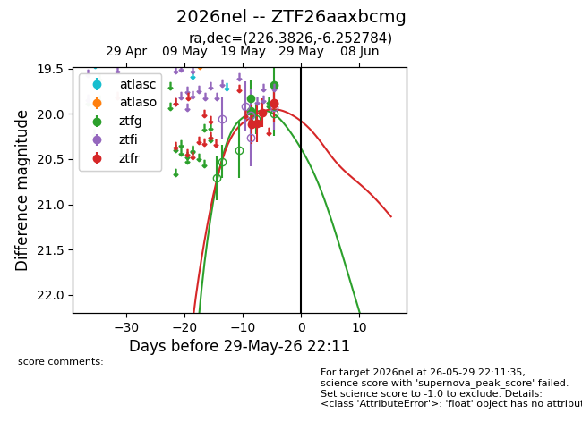
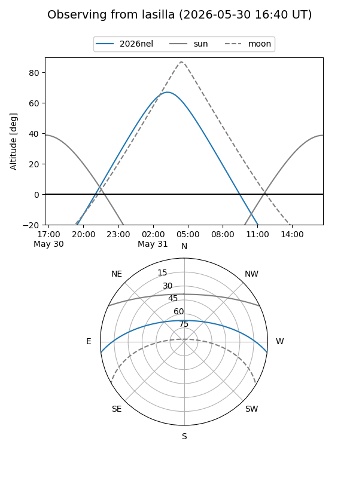
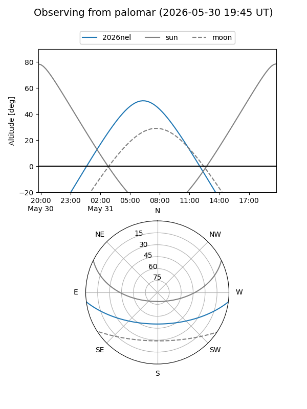
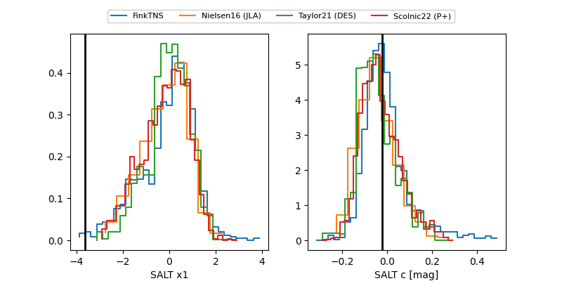

2026nel
Target 2026nel at 2026-05-29 22:13
Aliases and brokers:
lsst-FINK: link
lsst-Lasair: link
lsst-ALeRCE: link
ztf-FINK: link
ztf-Lasair: link
ztf-ALeRCE: link
TNS: link
YSE: link
alt names
ZTF26aaxbcmg (ztf,fink_ztf)
2026nel (tns,yse)
Coordinates:
equatorial (ra, dec) = 226.3826,-6.25278
equatorial (HMS+DMS) = 15:05:31.83,-06:15:10.02
galactic (l, b) = (352.0761,+43.46193)
Flags:
TNS confirmed: nan
Photometry:
last ztfg=19.68, ztfr=19.87
3 ztfg, 5 ztfr detections
Lightcurve

Visibility


Additional plots
